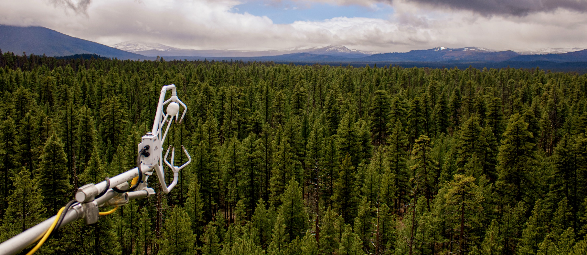

The OSU Forest Ecophysiology Lab is dedicated to investigating the responses of forest ecosystems to climate change. Our research focuses on understanding how we can use physiological ecology to study vegetation responses to environmental stressors across different ecosystems, including tropical forests and temperate mountain systems. We employ a variety of methodologies, including conducting empirical measurements of plant ecophysiology, long-term monitoring of forest dynamics, Bayesian statistics, and process-based modeling. If this something you are interest in, do not hesitate in reaching out!
Please note that the lab currently does not have any funded research positions available. If you are interested in pursuing your own funding and believe the Forest Ecophysiology Lab is the right environment for your research, please reach out via email (vargasgg@oregonstate.edu) detailing your research interests and their alignment with the lab’s work. Make sure this email includes the following: your CV, information for three professional references, describe your academic background, and long term career goals. If you feel unsure on how to craft that email, please check this website.
Please note that the lab currently does not have any funded research positions available. Reach out to me via email if you are interested in developing a proposal together to work in tropical dry forests or the ponderosa pine dry forests in the PNW.